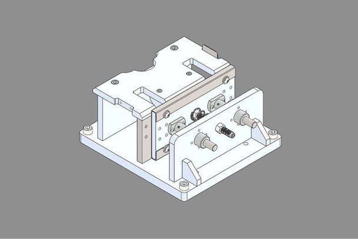
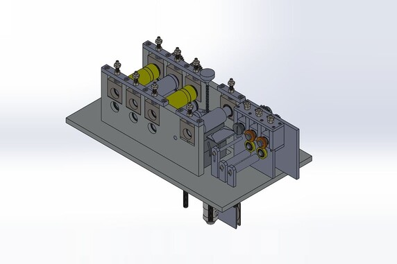

► Developed product showcase animations to effectively communicate and showcase conceptual design to stakeholders.
The animation provides stakeholders with a realistic look of a concept, captivating stakeholders during the presentation and ensuring comprehensive understanding of the design.
► Conducted SolidWorks training and provided best practices for fabrication and 3D printing to a crowd of 90, primarily targeting factory personnel.
The initiative aims to alleviate workload on the engineering team which improves productivity and efficiency within the department.

► Set standards to machine component used across all factories by studying and pinpoint crucial data and criteria required to mitigate product defect and customer complaints.
Formulated guidelines to follow and new data points to collect for engineers and QA/QC personnel for data collection.
Leveraged data collected within an automated Excel framework to design a QC jig for machine component and implement QA/QC standards across the assembly pipeline.

► Enhanced the design of facemask production machine through a strategic simplification approach, resulting in heightened product quality, minimized machine downtime and reduction in maintenance costs.